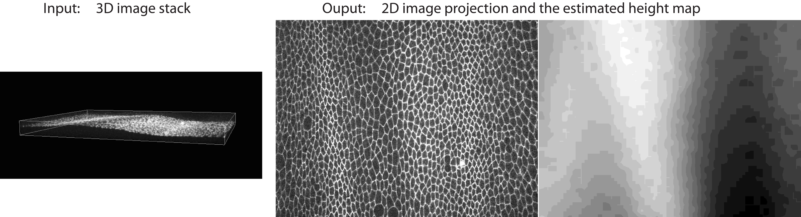
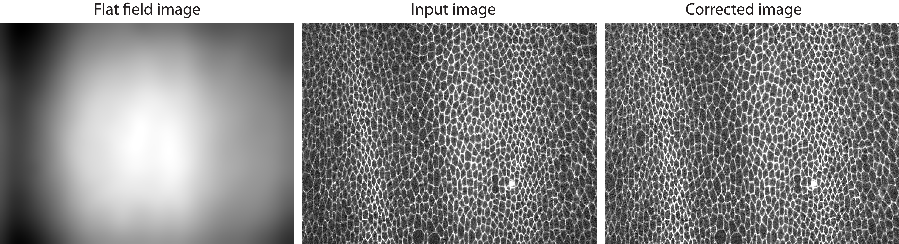
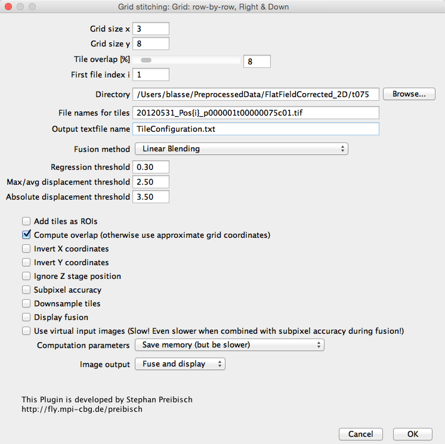
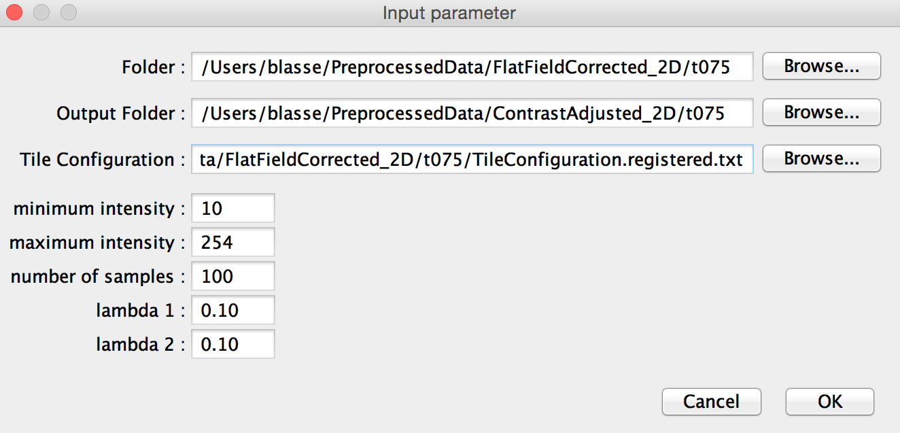

Mosaic Preprocessing Pipeline
View the Project on GitHub CBlasse/premosa
Navigation
Example
We provide a data example (here) to demonstrate the usage of PreMosa and its individual steps. Please run the entire pipeline first in order to generate all input files for testing the individual steps.Mosaic Preprocessing Pipeline PreMosa
To process the provided dataset, one needs to update the parameters in the XML file and then run PreMosa:
./PreMosa PreprocessingParameter_FlyWing.xml
PreMosa will generate a single, large 2D image per time point in the folder Stitched_2D.

Surface extraction
./SurfaceExtraction -r 16 -d 2 -t 50 -hmr
-in RawData/t075/20120531_Pos5_p000001t00000075c01.tif
-out PreprocessedData/Projection_20120531_Pos5_p000001t00000075c01.tif

Flat field correction
For running the flat field correction, you need a 2D image as input file. Please run PreMosa beforehand in order to generate the exemplary input image. As an alternative, you can also run the Surface Extraction, however, an adaptation of the exemplary input path is needed.
./FlatFieldCorrection
-in PreprocessedData/FlatFieldCorrected_2D/t075/20120531_Pos5_p000001t00000075c01.tif
-ff FFC.tif
-out PreprocessedData/FlatFieldCorrection_20120531_Pos5_p000001t00000075c01.tif

Mosaic stitching
To stitch the image mosaic, use the Fiji plugin Grid Stitching.

Contrast Adjustment
To adjust the contrast and brightness of individual tiles in a mosaic, launch Fiji with Java 8 and run the plugin Contrast Adjustment. When specifying the input parameter, it is important to add the slash (/) at the end of the input and output path.
